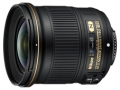

器材库 > 35mm画幅AF定焦镜头 > AF-S 24/1.8G ED

详细规格
发布日期
2015-08-05
厂家推荐价格
749.00 （美元）
焦距
24mm
最大光圈
f/1.8
最小光圈
f/16
镜头结构
12片/9组
非球面镜片
2片
低/超低色散镜片
2片
光圈叶片
7（圆形）片
最近对焦距离
23cm
驱动马达
SWM（宁静波动马达）
滤镜口径
72mm
镜头卡口
Nikon AF, Nikon F
防抖
否
颜色
黑色
尺寸
最大直径约77.5 x 83.0（当镜头收回时距相机镜头卡口的距离）mm
重量
约355g
该产品暂无存档的网友点评